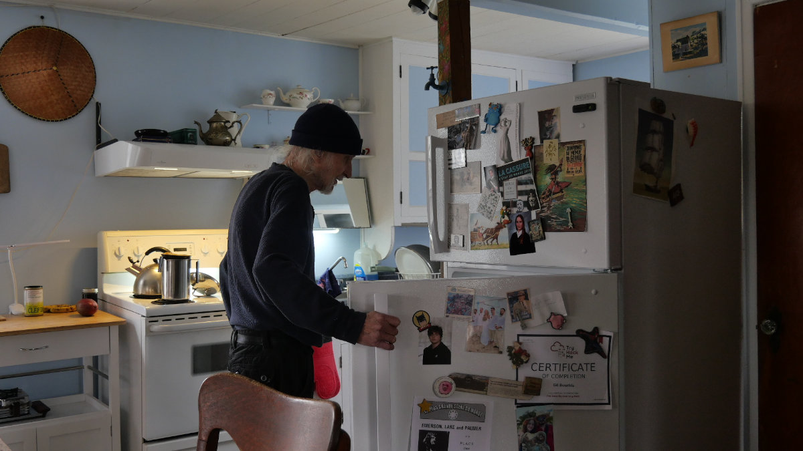

Voici ce que personne ne met jamais dans le même tableau.
Les pensions
Janvier 2025 : +2,6 % sur la RRQ. L'année d'avant c'était 4,4 %. Avant ça, 6,3 %. Ça suit l'IPC — l'indice des prix à la consommation. Une moyenne nationale qui compte les voitures neuves, les iPhones et les jeans. Des affaires que j'achète plus depuis longtemps.
Les loyers
Le Tribunal administratif du logement a suggéré +5,9 % en 2025. Un record depuis trente ans. L'année d'avant c'était déjà +4 % — ce qui était déjà un record. Pour les résidences pour aînés spécifiquement : +6,6 % en 2024.
Chaque année, le loyer grimpe plus vite que la pension. Pas dramatiquement. Juste… toujours dans le même sens.
Les fonctionnaires
Le secteur public québécois a négocié +17,4 % sur cinq ans. Avec les clauses de protection, ça peut monter à +20,4 %.
Je ne leur en veux pas. Ils ont bien fait de se battre. C'est nous qui aurions dû faire pareil.

Ce que ça donne
Quelqu'un qui touchait 2 000 $ par mois en 2022 reçoit aujourd'hui environ 2 300 $. Quinze pour cent de plus. Ça semble correct. Sauf que l'épicerie, le loyer, les médicaments — eux, ils n'ont pas attendu l'indexation de janvier pour monter.
Il est mathématiquement plus pauvre qu'il y a trois ans. Et ce retard-là, il ne se rattrapera jamais.
« Le réfrigérateur ne ment pas. »
— Gil Bourhis
Avril 2026 · Partie II de III